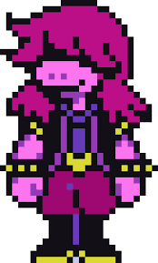
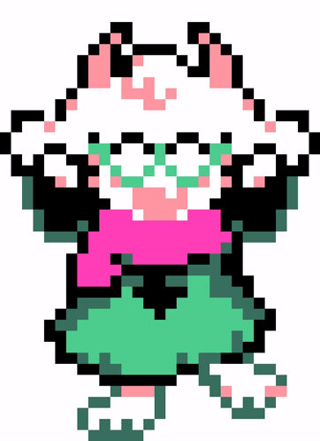
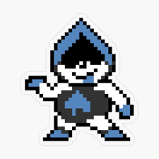

Personajes

Kris
Humano protagonista.
Kris es el protagonista de Deltarune, un adolescente humano que vive en Pueblo (Hometown) con su madre adoptiva, Toriel. Se caracteriza por ser un personaje silencioso, de género ambiguo y con una dualidad marcada entre su vida en el "Mundo de la Luz" y su transformación en el "Mundo Oscuro"

Susie
Fuerte y rebelde.
Susie es una chica fuerte y rebelde que vive en Pueblo (Hometown). Se caracteriza por ser aventurera, espontánea y con un fuerte sentido de la justicia.

Ralsei
Príncipe amable.
Ralsei es el príncipe de la oscuridad, un personaje amable y sabio que se une a los protagonistas en su viaje.

Lancer
Divertido y caótico.
Lancer es un personaje divertido y caótico que se une a los protagonistas en su viaje.